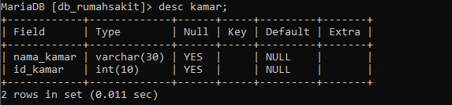
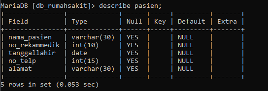

Kepanjangan dari SQL adalah …
a. Structured Question Language
b. Structured Query Language
c. Strong Query Language
d. Strong Question Language
e. Structured Query Long
Jawaban B
Kepanjangan dari SQL adalah Structured Query Language
Sub bahasa SQL yang digunakan untuk membangun kerangka atau struktur database disebut …
a. Basis data
b. SQL
c. DML
d. DCL
e. DDL
Jawaban E
DDL (Data Definition Language) merupakan bahasa SQL yang digunakan untuk membangun kerangka atau struktur database
Diantara perintah dibawah ini yang termasuk dalam kategori Data Definition Language (DDL) adalah …
a. Alter
b. Insert
c. Update
d. Rollback
e. Make
Jawaban A
Yang termasuk dalam kelompok perintah DDL adalah create, drop dan alter
Perintah DDL yang digunakan untuk mengubah struktur pada tabel adalah
a. Insert
b. Delete
c. Create
d. Drop
e. Alter
Jawaban E
Alter merupakan perintah kelompok ddl yang digunakan untuk mengubah struktur pada tabel
Create adalah perintah SQL yang digunakan untuk membuat sebuah database atau table. Perintah berikut yang benar untuk membuat tabel pada gambar di atas adalah...

a. mysql> create table kamar (nama_kamar varchar (30),id _kamar int (10)),
b. mysql> create tabel kamar (nama_kamar varchar (30),id_kamar int (10)):
c. mysql> create table kamar (nama_kamar varchar (30),id_kamar int (10));
d. mysql> create table kamar (nama kamar varchar (30),id kamar int (10));
e. mysql> create tabel kamar (nama_kamar varchar (30),id_kamar int (10);
Jawaban C
Bentuk umum untuk membuat tabel pada suatu database adalah :
create table nama_table (field1 tipe(size), field2 tipe(size);
sehingga perintah untuk membuat tabel seperti digambar adalah create table kamar (nama_kamar varchar (30),id_kamar int (10));
Untuk menampilkan struktur dari suatu tabel, diperlukan perintah SQL berupa …
a. Select table;
b. Show tables;
c. Describ table;
d. Desc table;
e. Create table;
Jawaban D
Untuk menampilkan struktur dari suatu tabel perintah sql yang digunakan adalah desc nama_tabel; atau describe nama_tabel;
Perintah untuk mengaktifkan atau membuka database adalah...
a. Use nama_database;
b. Drop database nama_database;
c. Use database nama_database;
d. Create database nama_database;
e. Show databases;
Jawaban A
Perintah untuk membuka atau mengaktifkan database adalah use nama_database;
Perhatikan tabel pasien berikut

Jika ingin menghapus field tanggal lahir pada tabel pasien di atas menggunakan perintah ...
a. ALTER TABLE pasien DROP tanggallahir;
b. ALTER TABLE pasien MODIFY tanggallahir date;
c. ALTER TABLE pasien RENAME tanggallahir;
d. ALTER TABLE pasien ADD tanggallahir date;
e. UPDATE pasien SET tanggallahir = ‘25/11/1992’;
Jawaban A
Untuk menghapus field pada tabel menggunakan alter drop sehingga perintahnya
ALTER TABLE pasien DROP tanggallahir;
Perintah untuk menambahkan primary key pada sebuah tabel adalah …
a. ALTER TABLE nama_tabel ADD nama_field;
b. ALTER TABLE nama_tabel nama_field;
c. ALTER TABLE nama_field ADD PRIMARY KEY (nama_tabel);
d. ALTER TABLE nama_tabel ADD PRIMARY KEY (nama_field);
e. ALTER TABLE nama_field ADD PRIMARY KEY (nama_field));
Jawaban D
Untuk menambahkan primary key pada suatu tabel dapat menggunakan perintah SQL
ALTER TABLE nama_tabel ADD PRIMARY KEY (nama_field);
Perintah untuk mengedit field barang menjadi satuan_barang pada tabel barang adalah...
a. ALTER TABLE barang ADD satuan_barang;
b. ALTER TABLE barang DROP satuan_barang;
c. ALTER TABLE barang MODIFY satuan_barang varchar;
d. ALTER TABLE barang RENAME TO satuan_barang;
e. ALTER TABLE barang CHANGE barang satuan_barang varchar (15);
Jawaban E
Untuk mengedit atau mengubah nama field menggunakan alter change sehingga perintahnya
ALTER TABLE barang CHANGE barang satuan_barang varchar (15);